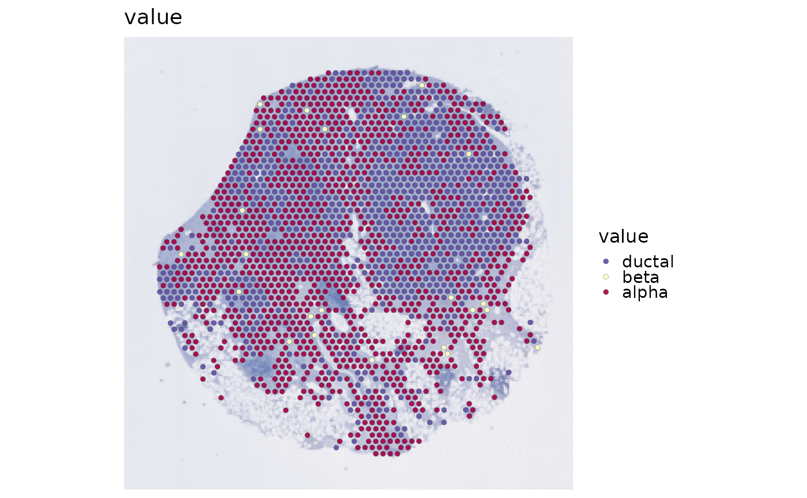

Plot stored spatial deconvolution proportions
Source:R/SpatialDeconvolutionPlot.R
SpatialDeconvolutionPlot.RdPlot spot-by-cell-type proportions stored by RunRCTD(), RunCARD(),
RunSPOTlight(). The plot reads the stored result
directly from srt@tools[[tool_name]] and never reruns a deconvolution
backend. RunCSIDE() is intentionally excluded because its output
represents differential or context effects rather than cell-type
proportions.
Arguments
- object
A spatial
Seuratobject containing a stored deconvolution result.- tool_name
Explicit non-empty key in
srt@tools. Results are never discovered implicitly.- cell_types
Optional cell types to display. The default uses all stored cell types.
- plot_type
Plot proportions as separate point maps, one dominant-type map derived from the stored proportions, or one spot-level pie map.
- combine
Whether to combine point or dominant maps. If
FALSE, return a named list.- nrow, ncol, byrow
Point-map layout controls. When both dimensions are
NULL, a near-square layout with at most three columns is used.- ...
Additional arguments passed to
SpatialSpotPlot().- image.scale
Image scale factor matching the selected raster.
- srt
Deprecated alias for
object; supply exactly one of the two. It will be removed in scop 1.0.0.
Details
Point maps share a zero-to-one scale. A cell type with no measured values
produces an informative empty panel instead of aborting the other maps.
For dominant and pie maps, cell_types selects the types participating in
the displayed comparison; pie fractions are relative to those selected types.
Examples
Restored example output generated on 2026-10-12 from SCOP 083f5f31e. These historical examples have not been revalidated against the current release. Current usage and arguments are documented above.
data(visium_human_pancreas_sub)
data(panc8_sub)
reference <- panc8_sub[, panc8_sub$celltype %in% c("ductal", "alpha", "beta")]
reference <- Seurat::FindVariableFeatures(reference, nfeatures = 300, verbose = FALSE)
features <- head(intersect(
SeuratObject::VariableFeatures(reference),
rownames(visium_human_pancreas_sub)
), 300)
spatial <- RunRCTD(
visium_human_pancreas_sub,
reference = reference,
reference_label = "celltype",
features = features,
assay = "Spatial",
reference_assay = "RNA",
layer = "counts",
reference_layer = "counts",
rctd_mode = "full",
max_cores = 1,
verbose = FALSE
)
#> Begin: process_cell_type_info
#> process_cell_type_info: number of cells in reference: 1148
#> process_cell_type_info: number of genes in reference: 97
#>
#> ductal beta alpha
#> 237 428 483
#> End: process_cell_type_info
#> create.RCTD: getting regression differentially expressed genes:
#> get_de_genes: ductal found DE genes: 22
#> get_de_genes: beta found DE genes: 4
#> get_de_genes: alpha found DE genes: 1
#> get_de_genes: total DE genes: 27
#> create.RCTD: getting platform effect normalization differentially expressed genes:
#> get_de_genes: ductal found DE genes: 26
#> get_de_genes: beta found DE genes: 7
#> get_de_genes: alpha found DE genes: 2
#> get_de_genes: total DE genes: 35
#> fitBulk: decomposing bulk
#> chooseSigma: using initial Q_mat with sigma = 1
#> Likelihood value: 40089.2008086036
#> Sigma value: 0.84
#> Likelihood value: 39342.4105815425
#> Sigma value: 0.69
#> Likelihood value: 38786.8209416109
#> Sigma value: 0.61
#> Likelihood value: 38578.9034272757
#> Sigma value: 0.53
#> Likelihood value: 38653.2368763574
#> Sigma value: 0.49
#> Likelihood value: 38432.7589536896
#> Sigma value: 0.48
#> Likelihood value: 38431.5741354963
#> Sigma value: 0.48
SpatialDeconvolutionPlot(spatial, tool_name = "RCTD", plot_type = "dominant")
